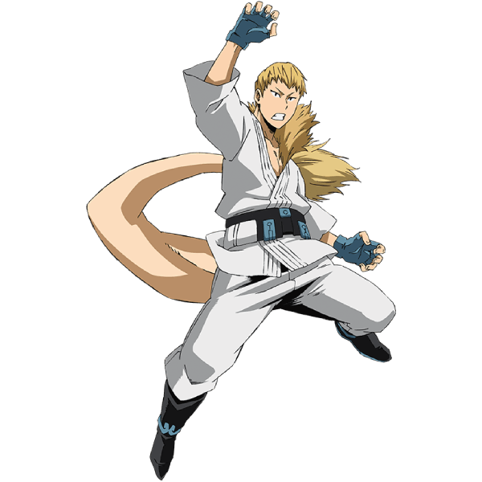

Mashirao Ojiro
Nome de Herói: Tailman
Individualidade: Tail – Possui uma cauda peluda extremamente forte e musculosa que funciona como um terceiro braço robusto, ideal para artes marciais e saltos.
Perfil:
Muito focado, calmo e com um forte senso de dignidade. É frequentemente chamado de o aluno mais "comum" ou "normal" da classe pelos próprios colegas.